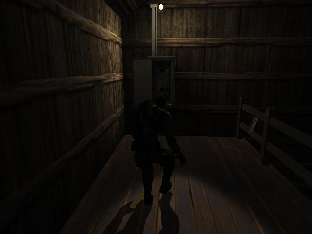
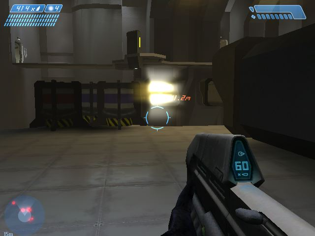
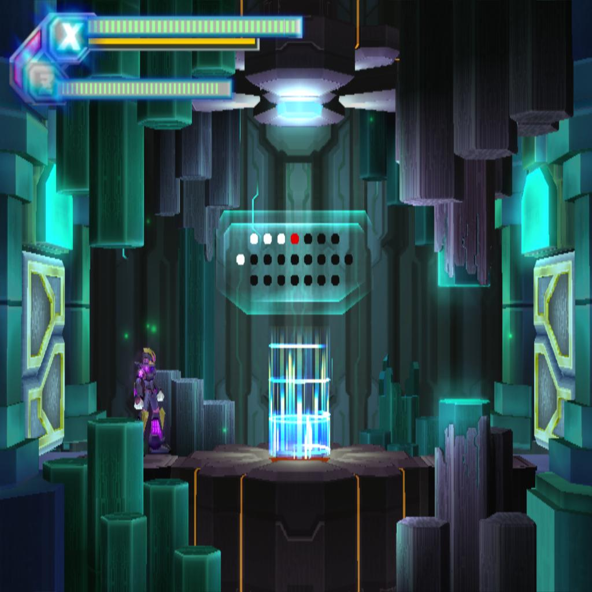

Home >>Archives >>2013 >>
Video Game Generations
Study the timeline of Video Gaming



Video Gaming History Timeline
History of Video Gaming
Early video games in 1950's-60's
First ever arcade video games (Amusements) in 1970's
Video gaming just keeps getting better and better. Just make a group, sit in a every single computer, a effort in programming,
and your imagination, you can now build your own game. Many video games available in a market. Electronic Arts is one
of the biggest company in Video Gaming. This company gives birth of racing phenomenon in Video Gaming such as Need For Speed.
and they are also give importance in sports in gaming such as FIFA, NBA, and NFL. Some game companies give such fun like
puzzle games. Ubisoft is one who gives an total action games like Tom Clancy's Series Games such as Splinter Cell. Capcom is
one of the oldest companies and they are strong inspite of many competitors and controversies in the 90's. They are popular
in different game genre such as 2d-fighting like "Street Fighter", horror shooting like "Resident Evil",
hack and slash like "Devil May Cry", and run and gun like "Megaman".
In these years, Video games is one of the mostly hobby for many people in the world. Because of technology,
Gamers gratefully enjoyed every game. Let's take back to their history. What is a video game?
Video game is an electronic device which involves a human interaction with a user interface to generate visual feedback.
History of Video Gaming
Most gamers today are using consoles, PC's and Arcades. But in 1947 after of World War II they are using interactive
electronic devices and mostly they are using CRT monitors (mostly on Televisions). In universities in that time,
Mainframe computers used for video games developed in United States.
Early video games in 1950's-60's
The early games in history is "OXO" in 1952, "Tennis for two" in 1958, and "Spacewar!" in 1961.
In 1961, a group of students at MIT, including Steve Russell,
programmed a game titled Spacewar! on the PDP-1, a new computer at the time.
The game pitted two human players against each other, each controlling a spacecraft capable of firing missiles,
while a star in the center of the screen created a large hazard for the crafts.
The game was eventually distributed with new DEC computers and traded throughout the then-primitive Internet.
Spacewar! is credited as the first influential computer game.
Also in 1961, John Burgeson wrote the first computer baseball simulation game on an IBM 1620 Computer at the IBM facility in Akron, Ohio.
Users picked a lineup and could then watch the results of their simulated game printed out by the computer.
First ever arcade video games (Amusements) in 1970's
In September 1971; Galaxy Game was used at Stanford University. Based on Spacewar!, this was the first coin-operated video game.
Only one was built, using a DEC PDP-11 and vector display terminals. In 1972 it was expanded to be able to handle four to eight consoles.
Also in 1971, Nolan Bushnell and Ted Dabney created a coin-operated arcade version of Spacewar! and called it Computer Space.
Nutting Associates bought the game and manufactured 1,500 Computer Space machines, with the release taking place in November 1971.
The game was unsuccessful due to its steep learning curve, but was a landmark as the first mass-produced video game and the first offered for commercial sale.
Bushnell and Dabney founded Atari, Inc. in 1972, before releasing their next game: Pong. Pong was the first arcade video game with widespread success.
The game is loosely based on table tennis: a ball is "served" from the center of the court and as the ball moves towards their side of the court each player must maneuver their paddle to hit the ball back to their opponent. Atari sold over 19,000 Pong machines, creating many imitators.
Back To Top
|